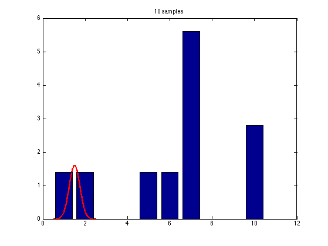
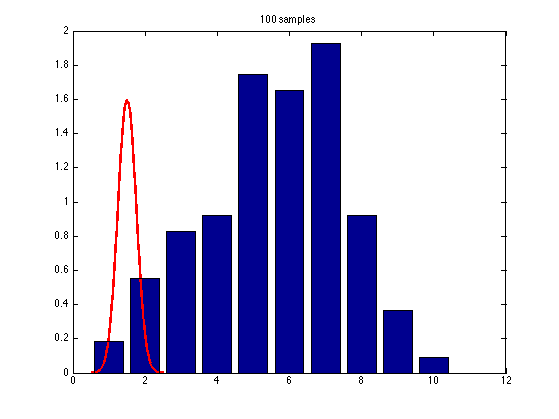
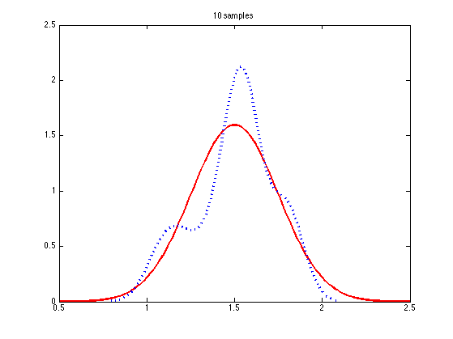
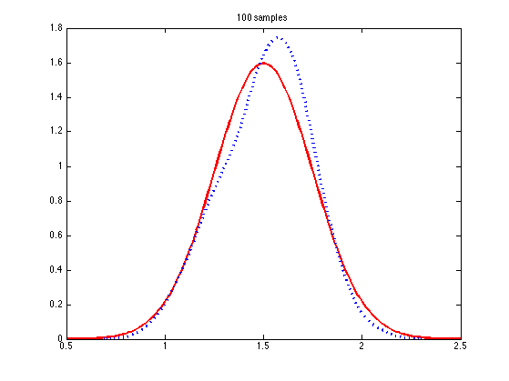
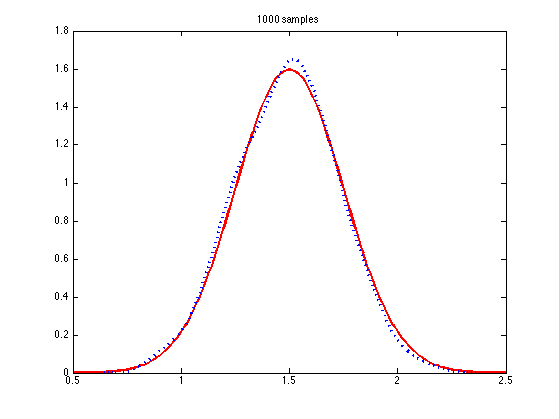
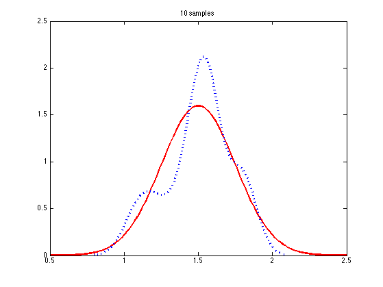
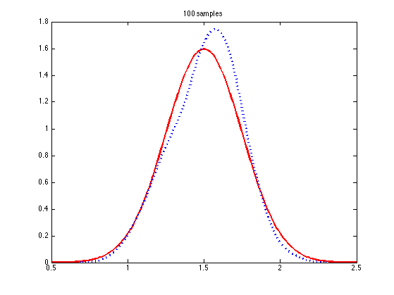
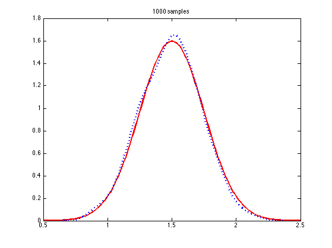

Plot monte carlo approximation to a distribution
Based on Peter Hoff's book, fig 4.1, p55 He uses Gamma(68, 45)
% This file is from pmtk3.googlecode.com useGam = false; setSeed(0); xs = 0.5:0.01:2.5; S = 1000; if useGam a = 68; b = 45; % shape (matlab uses scale) p = gampdf(xs, a, 1/b); samples = gamrnd(a, 1/b, S); name = 'gamma'; else mu = 1.5; sigma = 0.25; sigma2 = sigma^2; %p = gaussProb(colvec(xs), mu, sigma2); p = normpdf(xs, mu, sigma); samples = normrnd(mu, sigma, 1, S); name = 'gauss'; end SS = [10 100 1000]; for i=1:length(SS) S = SS(i); figure; plot(xs, p, 'LineWidth', 2.5, 'color', 'r'); hold on; [counts, locs] = hist(samples(1:S)); delta = locs(2)-locs(1); bar(normalize(counts)/delta); title(sprintf('%d samples', S)) printPmtkFigure(sprintf('mcAccuracyDemoHist%s%d', name, S)); end for i=1:length(SS) S = SS(i); figure; plot(xs, p, 'LineWidth', 2.5, 'color', 'r'); hold on; [f, xi] = ksdensity(samples(1:S)); plot(xi, f, 'linewidth', 3, 'linestyle', ':'); title(sprintf('%d samples', S)) printPmtkFigure(sprintf('mcAccuracyDemoKsd%s%d', name, S)); end 
   
  